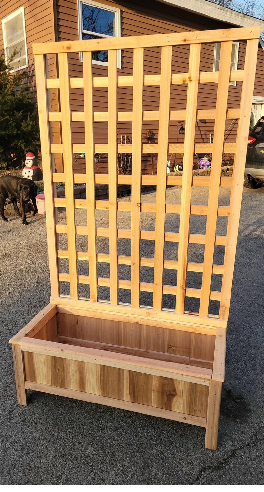

Raised Garden Boxes with Arch Trellis
A pair of raised garden boxes connected by an arch trellis, decorated with string lights. Perfect for climbing plants, flowers, or vegetables. The elevated design makes planting and tending easy on your back. A beautiful backyard centerpiece.
Starting at $XXX
Get a Quote
Planter Box with Trellis Wall
Cedar planter box with an attached tall trellis wall — ideal for climbing vegetables, roses, or privacy screening. The natural wood finish complements any garden setting. Available in custom sizes to fit your space.
Starting at $XXX
Get a Quote